¡Hola!Mi nombre es Fernanda Muciño y tengo 21 años. Actualmente, soy estudiante de Diseño. Me considero alguien sumamente productivo y organizada en mis proyectos. Creo que para obtener buenos resultados es fundamental aprovechar al máximo el tiempo disponible.En lo que respecta a los proyectos, me considero una persona innovadora y ordenada. Este portafolio es una colección de todos mis trabajos y de mis habilidades en ciertas áreas.

Alvaro Obregón, CDMX.
Cursando la Licenciatura en Diseño Universidad Autónoma Metropolitana Unidad Cuajimalpa
Sotfware y máquinas que se utilizar relacionadas al diseño:


Láminas de lenguaje básico
2022 - 2023

Recorrido fotográfico
2023

Emocionario
2023
Proyecto de Investigación 1
2024
Empaque de donas
2024
Proyecto de Investigación 2
2024
Luz en movimiento
2024

Cerámica - Macetas
2024
Proyecto de Investigación 3
2024
Publicidad de jugo
2024
Juguete Kinder - Nubu
2024
Prenda ciclista
2024
Señalética
2024
"
Juguete
2025
Proyecto de Investigación 4
2025
Carteles
Noviembre 2022 - Febrero 2023
En esta colección de láminas, elaboré ejercicios utilizando el lenguaje básico de diseño, explorando diferentes combinaciones y conceptos de manera manual. Generando patrones para la creación de figuras en 3D que los incorporara.
Hecho por:
Fernanda Muciño

Retícula circular flor de 4 pétalos

Ejercicio con compás

Ejercicio con compás

Forma y equilibrio

Peso visual

Ritmo geométrico

Texturas cierre visual

Texturas cierre visual

Tetraedro plantilla con patrón


Tetraedro plantilla con patrón


Tetraedro plantilla con patrón


Tetraedro plantilla con patrón


Tetraedro plantilla con patrón


Octubre 2023
Primer acercamiento a retratos profesionales.
Colaboración con:
Diana Coyac
Fernanda Muciño

Retrato 1
Ángulo: Plano normal
Iluminación: Luz artificial cálida, 45°
Encuadre: Plano medio

Retrato 2
Ángulo: Plano normal
Iluminación: Luz artificial blanca, 90°
Encuadre: Primerisimo primer plano

Retrato 3
Ángulo: Plano normal
Iluminación: Luz artificial cálida, 90° y superior
Encuadre: Plano medio corto

Conceptual 1
Ángulo: Plano normal
Iluminación: Luz artificial cálida, 45°
Encuadre: Primer plano

Conceptual 2
Ángulo: Plano normal
Iluminación: Luz artificial cálida, sup.
Encuadre: Plano medio corto

Conceptual 3
Ángulo: Plano normal
Iluminación: Luz artificial blanca, 90°
Encuadre: Plano medio corto

Afición 1
Ángulo: Plano normal
Iluminación: Luz natural
Encuadre: Primer plano

Afición 2
Ángulo: Plano normal
Iluminación: Luz natural
Encuadre: Primer plano

Afición 3
Ángulo: Plano en picada
Iluminación: Luz artificial blanca, 45°
Encuadre: Primer plano


Octubre 2023
Se realizó un diario en el que niños de 7 a 9 años pudieran aprender a comunicar sus emociones y pensamientos a través de preguntas y actividades artísticas. Se recopiló información sobre los usuarios a los que nos dirigimos, se realizó el diseño editorial y la identidad del diario, además del personaje principal "Dimo" con 6 emociones básicas.
Hecho por:
Fernanda Muciño - Diana Coyac
Sofia Magdaleno - Danny Belmont - Sara Fuentes


Se creó a Dimo con el propósito de ofrecer a los usuarios un personaje que los acompañara durante las actividades del Diario. Posee seis emociones fundamentales, las cuales se ilustran mediante colores y las expresiones del mismo personaje.
Adoptó diversas representaciones y mostró una gran versatilidad en cuanto a profesiones y personalidades. De acuerdo con la actividad de la página, se colocó a un Dimo que simbolizara lo que se estaba visualizando.


Algunas actividades del diario.


Febrero 2024
Se eligió un problema relacionado con el transporte público, tomando como referencia a nuestra compañera Sofía, cuya rutina diaria requiere 3 horas de viaje utilizando distintos tipos de transporte. Se recopiló la información requerida, se identificó la problemática principal y se propuso una solución que incluyó el mapeo y el estudio del espacio adecuado, así como la implementación de nuestra propuesta.
Hecho por:
Fernanda Muciño
Yair Noriega
Diana Coyac
 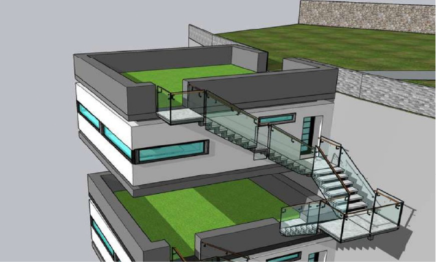
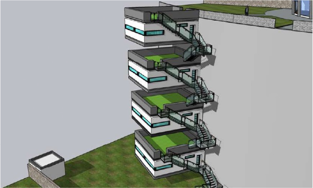
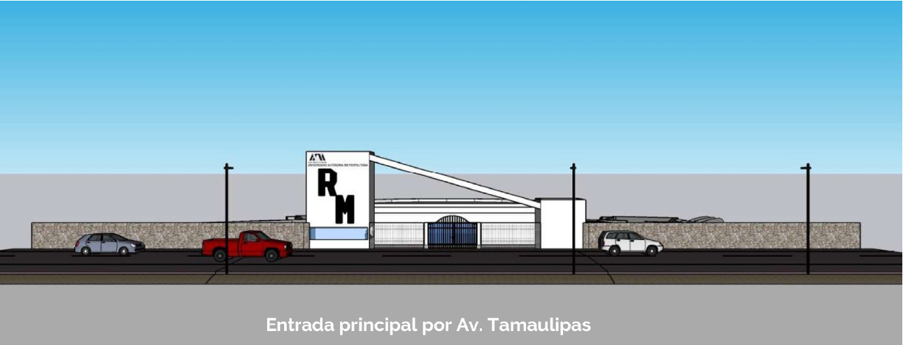
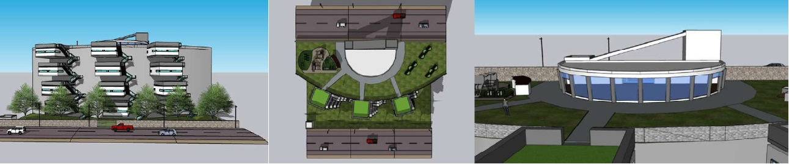
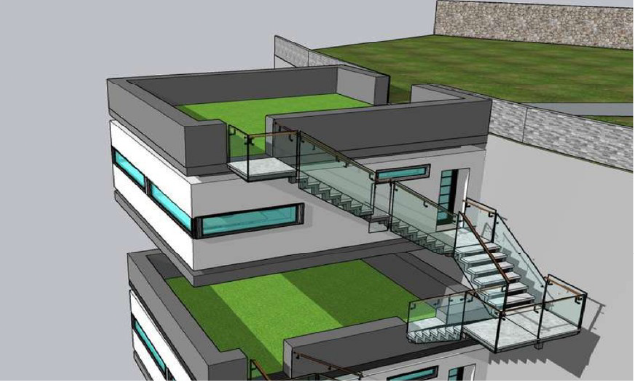
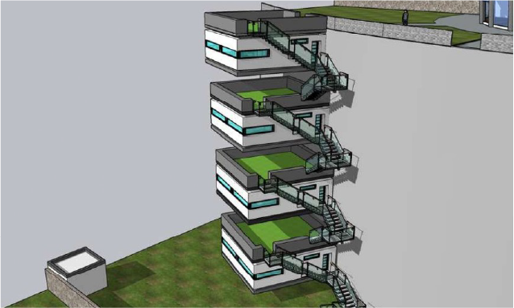
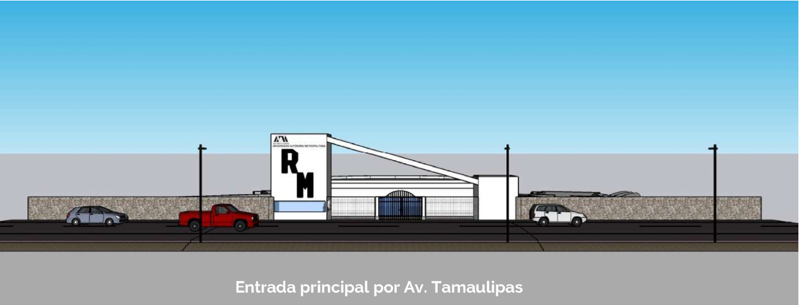
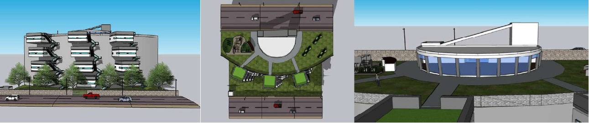
Ubicación en Av. Tamaulipas, Lomas de Santa Fe, Contadero, Cuajimalpa de Morelos, CDMX
El proyecto consiste en hacer unos departamentos en los que tengan acceso estudiantes de la UAM que cumplan una serie de requisitos, ya que solo obtendrán la beca si cumplen con lo siguiente:
1. Vivir en otro estado (ser foráneos).
2. Ser estudiantes de la UAM Cuajimalpa.
3. Tener un promedio arriba de 8.5.
4. No ser alumno rezagado (Debes ser alumno regular).
El fin de esto es tener un control de los departamentos y que los ocupen los que en verdad lo necesiten para así acortar el tiempo de trayecto.
Descripción general:
Serán 7 torres con cuatro departamentos cada una, en los cuales podrán habitar 112 alumnos de la UAM Cuajimalpa.
Descripción departamentos:
1. Baño completo.
2. Habitación para 4 personas (2 literas).
3. Lugar de almacenamiento (Ropero).
4. Sala.
5. Cocina con refrigerador, comedor, horno y fregadero.
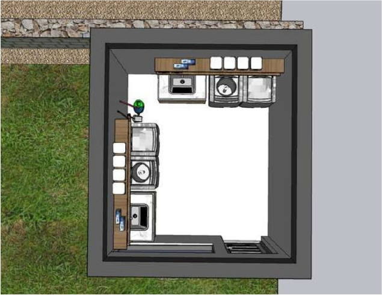 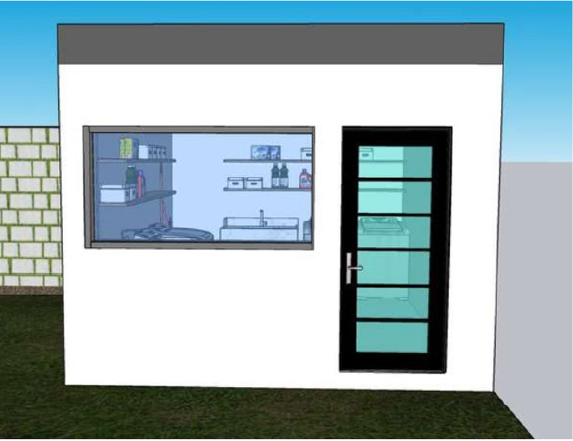Servicios como agua, luz, internet y gas.
Espacio de 50 m2.
Dormitorios.
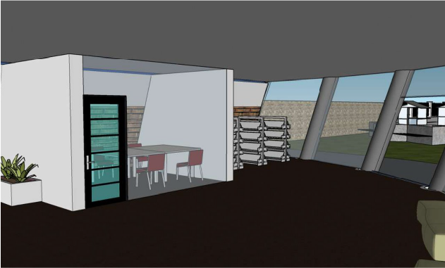 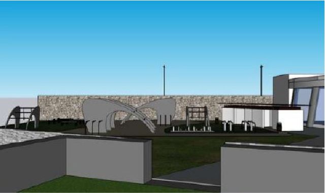Área para el público en general.

Mayo 2024
Diseño de un empaque para donas, abarcando desde la identidad visual hasta la creación del empaque en sí. El trabajo se llevó a cabo utilizando puntos de fuga,monteas,vistas isométricas y perspectivas todo digitalmente. Finalmente, se realizó la impresión y se armo el empaque a escala.
Hecho por:
Fernanda Muciño

Isométrico empaque abierto

Isométrico empaque cerrado

Perspectiva y sombra de empaque abierto

Perspectiva empaque cerrado


Mayo 2024
Se seleccionó un tema vinculado a un problema social, por lo que optamos por el caso de Teresa (Gustavo), una joven transgénero que nunca fue aceptada por su familia ni por la comunidad en la que vivía, lo que la llevó a enfrentar discriminación.
Hecho por:
Fernanda Muciño
Yair Noriega
Sofia Magdaleno
Folleto para la difusión de información
El proyecto se estructura en varias fases, incluyendo conferencias educativas, paneles de discusión, talleres prácticos y actividades culturales.
1. Conferencias: se enfocarán en brindar una comprensión y análisis de los desafíos que enfrentan las comunidades de LGBT+ y las comunidades agrícolas, incluyendo aspectos legales, sociales y psicológicos.
2. Paneles de discusión: contarán con la participación de expertos, activistas y académicos que debatirán sobre un ambiente más inclusivo, también se llevarán a cabo performance en dónde se podrá opinar sobre ellos y las personas de Hidalgo hablaran sobre su trabajo de agricultura.
3. Talleres prácticos: ahí los habitantes realizarán prácticas de como se trabaja en la agricultura y la ganadería, realización de artesanías.
4. Actividades culturales: celebrarán la diversidad y la riqueza de las comunidades agrícolas y LGBT+, proporcionando un espacio seguro para la expresión artística y personal.
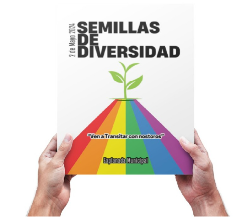 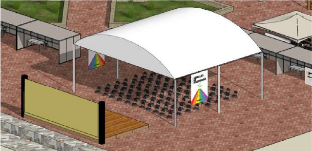Escenario
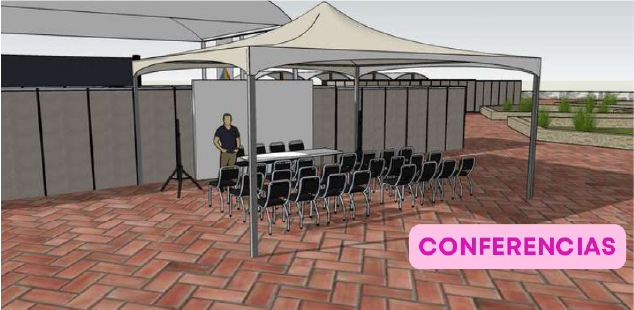Para que las personas lleven sus productos y puedan vender o hacer trueque mientras conviven con la comunidad.
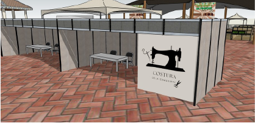 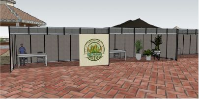 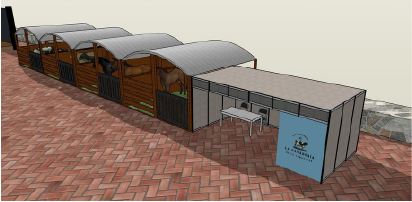Talleres
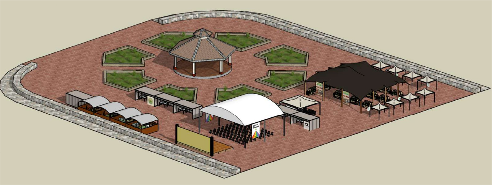Vista general del evento
Mayo 2024
Se llevó a cabo el proyecto de crear una lámpara con forma de cápsula que tuviera un diseño y además incluyera movimiento. Está formado por dos semiesferas y tres anillos en los que se esculpió un diseño vinculado al mar.
Hecho por:
Fernanda Muciño
Sofia Magdaleno
Isométrico general.
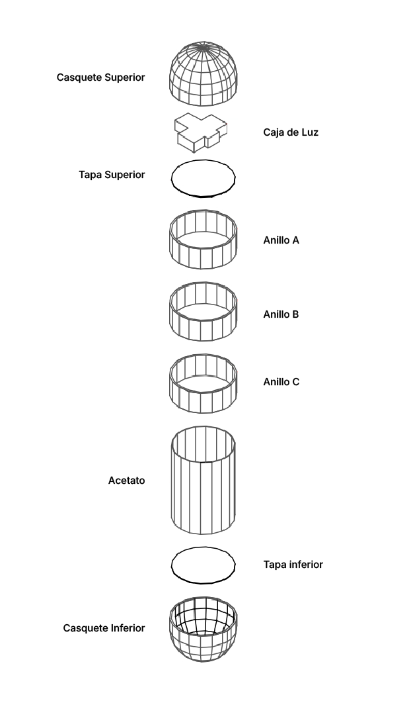Explosivo.
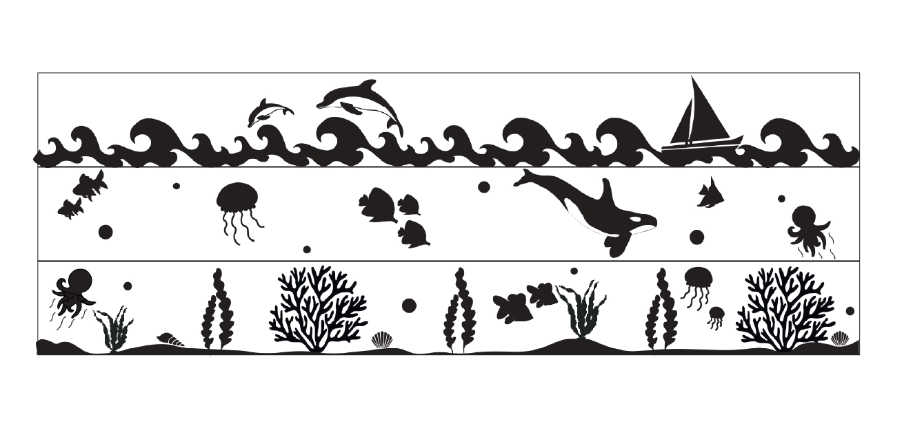Diseño - los 3 niveles del mar.
Media esfera realizada con planos seriados.

Resane con pasta automotriz.

Botón.
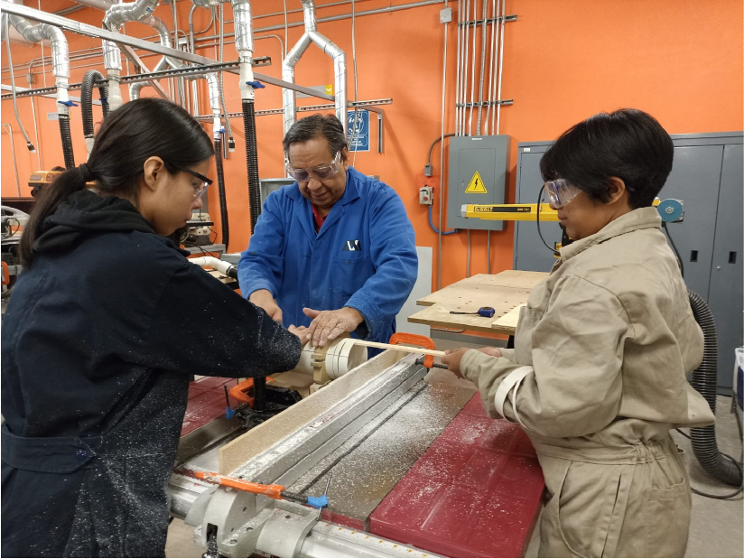Corte de anillos.
Grabado.
Cableado para caja de luz.
Termoformado de casquetes.

El objetivo de nuestro diseño consistió en que el grabado se realizara de forma interna, de modo que a simple vista solo se percibieran algunos elementos; sin embargo, al encender la lámpara, el grabado se revelaría. El diseño representa los 3 niveles del mar.
Octubre 2024
Se creó un modelo de macetas de 80 mm, complementándolo con la fabricación de sus bases, empaques y bolsas para su transporte, todo ello con una identidad gráfica. Para llevar a cabo el proyecto, se empleó maquinaria para las bases de madera, así como modelado e impresión 3D para crear los moldes en los que se fabricarían macetas de batbotina. También se efectuó serigrafía en textil y cartón, y se diseñó un empaque a medida para el producto.
Hecho por:
Fernanda Muciño

Render base y maceta

Render armado de la base


Render empaque


Serigrafía.


Moldes
Se creó una caja de contención en la que se vertió yeso cerámico. Dentro, se colocó la forma de mi maceta junto a un vertedero hecho de plastilina, lo que permitió que la barbotina fluyera y se formara la figura. De este modo, se puede reproducir la maceta en múltiples ocasiones, asegurando que todas las piezas sean idénticas.


Octubre 2024
Sistema de Información Integral para la ubicación, difusión e identificación de la Ruta 76-A de la re de transporte público (RTP) Santa Fe - Auditorio.
Hecho por:
Fernanda Muciño
Diana Coyac
Danny Belmont
Victor Nava
La problemática identificada en la ruta 76-A de la red de transporte público (RTP), es que el usuario no logra ubicarse adecuadamente en las paradas que hacen las unidades durante el transcurso de la ruta, esto debido a que no hay una buena comunicación y señalización con los usuarios de la ruta, provocando que no sepan donde uno puede bajar y subir a la unidad de red de transporte público (RTP).
También logramos identificar que hay muchas personas que aún no se acostumbran y desconocen del uso de la tarjeta movilidad integrada para pagar el servicio del transporte, además de que hay pocas zonas de recarga para la Tarjeta.
Diseñar e implementar un sistema de información integral para la ruta 76-A de la red de transporte público (RTP), buscando mejorar la accesibilidad de los usuarios mediante la provisión de información clara y precisa. Este sistema tiene como objetivo optimizar la experiencia de los usuarios al usar el servicio de transporte de la ruta en cuestión.
Rediseño del sistema de información y comunicación en la ruta 76-A.

Logotipo general + retícula
La tipografía es “Tipo Movin CDMX” la usa el gobierno para lostransportes. Las formas se retoman del RTP, la línea verde se basa en las formas de las ventanas.
Logotipo Express y ordinario + retícula
Se ocupa la síntesis del costado del camión incorporando el icono principal del RTP
La señalética que será empleada en las paradas, se diseñaron con un elemento característico de la zona en la que se encuentran cada una de las paradas de la ruta 76-A, personajes u animales a los que dan nombre a las paradas. Esto ayudara a que los usuarios se guíen u orienten, y puedan identificar cada una de las paradas de la ruta 76-A.
Se diseño una retícula general que contienen la caja de contención y el espacio donde se aplicara la tipografía. Posteriormente se diseño una retícula especifica dependiendo el elemento visual que contendrá.

Cartel.
Mapa de ubicación.
Infografía de uso y carga.
Refugio peatonal de las paradas del RTP.

Septiembre 2024
Se diseñó una nueva forma para la botella del jugo "Frutos de vida", y se llevaron a cabo varios renders con fines publicitarios. Se modelaron y crearon distintos escenarios para enriquecer el diseño.
Hecho por:
Fernanda Muciño

Proceso de modelado de botella.


Render Jugo de Zarzamora manzana.


Render Jugo de naranja, apio y nopal.


Render Jugo de piña, apio y nopal.


Se elaboró un cartel para cada sabor de jugo, y simultáneamente, se diseñaron tres carteles que representaban la combinación de los tres sabores.

Ejemplo de un cartel con la información.

Septiembre 2024
Se modelo y se imprimió en 3d un juguete que iba a estar dentro de un Huevo Kinder Maxi. El proceso de diseño abarcó desde la conceptualización, el público objetivo, los bocetos, el modelado, hasta la elaboración de un instructivo para su ensamblaje, junto a diversas imágenes que complementarían el juguete.
Hecho por:
Fernanda Muciño
Abigail Luna


El juguete es un portaretrato, que presenta la forma de una nube, se utilizó un filamento que cambia de color cuando se encuentra en la oscuridad. Esto lo hace más atractivo y ofrece una mejor representación de los tonos que los niños suelen asociar con las nubes.

Portada.

Instructivo.

En el instructivo se agregó a través de la app METACLASS, realidad aumentada del juguete.
Noviembre 2024
Se creó una prenda destinada a los ciclistas que estudian en la UAM-C, con la finalidad de mejorar su visibilidad en condiciones de baja luminosidad. Por esta razón, se diseñó una sudadera que simulara la pantera, por eso se incluyó las características principales en el diseño de la chamarra y que a su vez fuera funcional, agregando elementos reflejantes.
Hecho por:
Fernanda Muciño
Abigail Luna
Karina Rivera


Se implemento las rosetas de la pantera, el logo de la Institución y FAK las iniciales de las diseñadoras de la sudadera.


Corte de vinil.

Depilación.

Planchado.


Se hizo un test en un lugar con poca luz y se puso una mochila para evaluar si realmente funcionaba la prenda, asegurando que el ciclista se viera desde cualquier ángulo.
Diciembre 2024
Entendiendo un poco las normativas de las señaleticas, la exploración de materiales y de la máquina láser se hicieron dos propuestas de señalización para la UAM-C.
Hecho por:
Fernanda Muciño
Abigail Luna
Karina Rivera
Se pensaba en una señal tomando en cuenta la circulación de las personas que fuera necesario de acuerdo al espacio elegido (primer piso de la UAM-C).
A partir de la tipografía Myriad Pro SemiCondensed Semibold se realizó el pictograma.
Estás medidas consideran que la distancia máxima de visualización de la señal sera desde los de 10m.
La señalética diseñada tiene forma de prisma triangular, lo que permite que se proyecte desde la pared y sea visible desde dos ángulos diferentes. Este enfoque mejora su funcionalidad, asegurando que los usuarios puedan identificarla fácilmente desde los ángulos necesarios.
La señalética está diseñada para ser adherida a la pared sobre donde se encuentra el extintor.
La señalización de la cafetería actualmente en la UAM-C se encuentra bloqueada por diversos anuncios y también por la fila de personas que esperan para entrar. Además, esta señalización carece de ciertos componentes, como el braille y el relieve, que son necesarios para que sea útil para aquellos con baja visión o ceguera total.
A partir de la tipografía que se eligió se desarrolló el pictograma de los cubiertos y posteriormente se modelaron en 3D para imprimirlos, se preservó sus características principales, redondeando zonas para seguridad al tacto.
Se generó en un sitio de braille, cumpliendo normativas y dimensiones adecuadas para garantizar su comprensión. En conjunto con sus elementos guía (media luna) y una flecha indicando la navegación a las personas con discapacidad visual.
Debe de estar colocada a una altura de 1.20m a 1.60m, con todos los bordes redondeados.

Enero 2025
Se creó un juguete dirigido a niños de entre 12 y 36 meses, con el objetivo de impulsar el desarrollo de su motricidad fina, así como también facilitarles el reconocimiento y la asociación de colores y formas geométricas.
Hecho por:
Fernanda Muciño
Abigail Luna
Karina Rivera


Se creó con el propósito de que los niños inserten las piezas siguiendo su color y su forma. Optamos por darle la forma de un camión para que pueda ser desplazado. Su tamaño es apropiado para su etapa de desarrollo.

Modelado desde Autocad.


Prototipo en cartón.


Corte de las piezas en Router CNC.


Pintado y acabado.


Por la temática de granja la cabina es en forma de un granero.
Enero 2025
En Tlanepantla, los residentes de un fraccionamiento, mayoritariamente personas de la tercera edad, enfrentan un desafío: la soledad. Esta circunstancia ha provocado un aislamiento social gradual, en el que muchos eligen quedarse en sus casas, sin compañía ni interacción relevante con el mundo exterior. Se llevó a cabo un mapeo de todas las problemáticas identificadas en nuestra investigación de campo.
Hecho por:
Fernanda Muciño
Abigail Luna
Isaac Zaldivar
Sofia Perez


Los patrones están inspirados en las calles y andadores del fraccionamiento, y los módulos se construyeron a partir de la retícula de los pictogramas.
Iglesia
Lavandería
Tienda
Se crearon pictogramas para señalar los pocos servicios disponibles en el fraccionamiento.
Guardería de perros
Veterinaria
Parque
Verdulería
Invasores
Inseguridad
Otros pictogramas muestran las percepciones de los habiatantes del fraccionamiento, como estos dos ultúltimos.
Para convertir la información obtenida en un elemento físico como la maqueta, se llevó a cabo un análisis detallado del espacio y las problemáticas identificadas en el fraccionamiento. Entre estas, se optó por resaltar los andadores y los puntos de reunión como los principales elementos a representar.
Para finalizar, la soledad y la exclusión social que se perciben en el fraccionamiento fueron representadas mediante un domo que cubre la maqueta, simbolizando el aislamiento y el encierro que experimentan los habitantes.
Colección de carteles e infografías elaborados sobre diversos temas, donde se investigó el uso y disposición de los elementos e información.
Brief de Proyecto “Emocionario” (2023)
Hecho por:
Fernanda Muciño
Diana Coyac
Sofia Magdaleno
Danny Belmont
Sara Fuentes
Invitación para un evento (2024)
Hecho por:
Fernanda Muciño
Collages de Jazz en México (2024)
Hecho por:
Infografía de proyecto “Luz en movimeinto” (2024)
Hecho por:
Fernanda Muciño
Sofia Magdaleno
Cartel de publicidad (2024)
Hecho por:
Fernanda Muciño
Inforgrafía proyecto “Prenda para ciclista” (2025)
Hecho por:
Fernanda Muciño
Inforgrafía proyecto “Fraccionamiento las Rosas” (2025)
Hecho por:
Fernanda Muciño
Abigail Luna
Isaac Zaldivar
Sofia Perez